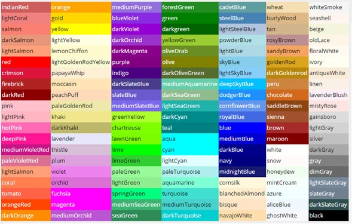

What is the difference between EM and REM?
CSS units could be a subject of several articles.
What are rem units?
REM stands for "root em", they can help us to do achieve a harmonious and balanced design.
According to the W3C spec
the definition for one rem unit is:
Equal to the computed value of font-size on the root element. When specified on the font-size property of the root element, the rem units refer to the property’s initial value.
Both em and rem are flexible, scannable units but main point to consider is:
- rem is always relative to root element(html).
- em is always relative to the parent element.
How browsers interpret pixels
Setting the size of the front with percentages causes the browser to calculate the size of the font based on the size of the parent element. For example, if the font size
of the body is set to 12 pixels and the font size for p element is set to 125%, the font size for the text in paragraphs is 15 pixels.
You can use percentages, lenghts units, and font-size keyworks to set type size. Length units fall into two categories: absolute and relative. Absolute length includes Inches, Centimeters,
Millimeters, Points and Picas.
A point, in terms of the CSS specification, is equal to 1/72nd of an inch and a pica is equal to 12 points.
Because browser displays vary due to different operating systems and video settings, setting type in a fixed (or absolute ) value doesn’t make much sense. In fact, it’s best to avoid absolute measurements for web documents, unless you’re styling documents for fixed output. For example, when you create a style sheet to print a web document, absolute length units are preferred.
The Specific changes in CSS3
Selectors
Selectors are at the heart of CSS. Originally, CSS allowed the matching of elements by type, class, and/or ID. CSS2.1 added pseudo-elements, pseudo-classes, and combinators.
With CSS3, we can target almost any element on the page with a wide range of selectors.
CSS2 introduced several attribute selectors.
These allow for matching elements based on their attributes.
CSS3 expands upon those attribute selectors.Three more attribute selectors were added in CSS3;
they allow for substring selection.
CS3S Colors

CSS3 brings with it support for some new ways of describing colours . Prior to CSS3, we almost always declared colours using the hexadecimal format (#FFF, or #FFFFFF for white). It was also possible to declare colours using the rgb() notation, providing either integers (0–255) or percentages.
The color keyword list has been extended in the CSS3 color module to include 147 additional keyword colors (that are generally well supported), CSS3 also provides us with a number of other options: HSL, HSLA, and RGBA. The most notable change with these new color types is the ability to declare semitransparent colors.
1. RGBA :
RGBA works just like RGB, except that it adds a fourth value: alpha, the opacity level or alpha transparency level. The first three values still represent red, green, and blue. For the alpha value, 1 means fully opaque, 0 is fully transparent, and 0.5 is 50% opaque. You can use any number between 0 and 1 inclusively.
2. HSL and HSLA
HSL stands for hue, saturation, and lightness. Unlike RGB, where you need to manipulate the saturation or brightness of a color by changing all three color values in concert, with HSL you can tweak either just the saturation or the lightness while keeping the same base hue.
The syntax for HSL comprises an integer value for hue, and percentage values for saturation and lightness.
The hsl( ) declaration accepts three values:
— The hue in degrees from 0 to 359. Some examples are: 0 = red, 60 = yellow, 120= green, 180 = cyan, 240 = blue, and 300 = magenta.
— The saturation as a percentage with 100% being the norm.
Saturation of 100% will be the full hue, and saturation of 0 will give you a shade of gray — essentially causing the hue value to be ignored.
— A percentage for lightness with 50% being the norm. A lightness of 100% will be white, 50% will be the actual hue, and 0% will be black.
The a in hsla( ) here also functions the same way as in rgba( )
3.Opacity
In addition to specifying transparency with HSLA and RGBA colors (and soon, eight-digit hexadecimal values), CSS3 provides us with the opacity property. opacity sets the opaqueness of the element on which it’s declared, similar to alpha.
CSS 3 Rounded Corners
Rounded corner elements can spruce up a website, but creating a rounded corner requires a designer to write a lot of code. Adjusting the height, width and positioning of these elements is a never-ending chore because any change in content can break them.
CSS 3 addresses this problem by introducing the border-radius property, which gives you the same rounded-corner effect and you don't have to write all the code. Here are examples for displaying rounded corners in different places of a website.
CSS3 Text Shadow
The new text-shadow property allows you to add drop shadows to the text on a webpage. Prior to CSS 3, this would be done by either using an image or duplicating a text element and then positioning it. A similar property called box-shadow is also available in CSS 3.
CSS 3 Box Shadow
A box shadow allows you to create a drop shadow for an element. Usually this effect is achieved using a repeated image around the element. However, with the property box-shadow this can be achieved by writing a single line of CSS code.
After previously removing this property from the CSS 3 Backgrounds and Borders Module, the W3C added it back in the last working draft.